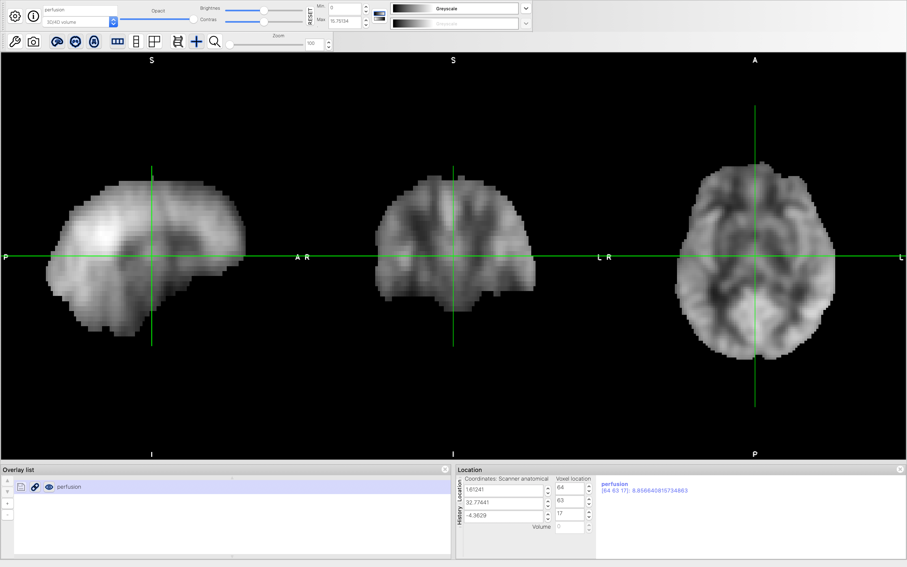
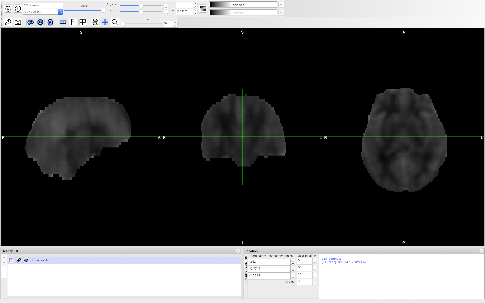

CBF Quantification¶
Introduction¶
The goal of this section is to compute voxel-wise CBF using the data that we have pre-processed in previous steps. We will also tranform the quantified CBF image from ASL space to standard MNI-152 2mm space for group analysis.
CBF Quantification¶
We are going to use the oxford_asl tool to quantify CBF from our the mean ASL label/control difference data. Here, we need to specify our acquisition parameters:
Inversion time (–tis): 3.475 the summation of labeling duration and post-labeling delay
Labeling duration (–bolus): 1.45;
Labeling duration is the same in all voxels (–fixbolus)
Labeling technique is PCASL or CASL (–casl)
T1 relaxation of tissue (–t1): 1.3;
T1 relaxation of arterial blood (–t1b): 1.65
Use spatial priors (–spatial)
Ignore arterial blood component (–artoff)
The command is
oxford_asl -i asl_diff_mean -o output_cbf -m mask --tis 3.475 --bolus 1.45 --fixbolus --casl --t1 1.3 --t1b 1.65 --spatial --artoff
The file output_cbf/native_space/perfusion.nii.gz is the estimated CBF image. We can have a look at it in FSLeyes
Note that this is not the CBF image in absolute units (ml/100g/min), rather it is in arbitrary units. But it is important to check our results here. If everything works fine, we can move on to the calibration step.
Calibration¶
The goal of calibration is to convert CBF from arbitrary units to the familiar ml/100g/min unit. Here, we need to use the M0a data that we derived before. We also need to consider the impact of labeling efficiency (in our case it is 85%) as well as the signal loss due to background suppression. Since we used 3 background suppression pulses, each with a efficiency of 91%, the effective signal should be 91% * 91% * 91% = 75%. Finally, we need to convert the unit from s-1 to ml/100g/min (a factor of 6000). Now let’s incorporate all the information in our calibration command:
fslmaths output_cbf/native_space/perfusion -div M0a -div 0.85 -div 0.75 -mul 6000 -mas mask CBF_absolute
Now let’s have a look at CBF_absolute file in FSLeyes. The value of each voxel should be in ml/100g/min unit.
Transform from ASL to MNI-152 2mm Space¶
Finally, we can transform the absolute CBF image to MNI-152 2mm standard space using linear and non-linear registration:
applywarp --ref=${FSLDIR}/data/standard/MNI152_T1_2mm --in=CBF_absolute --warp=fsl_anat_dir.anat/T1_to_MNI_nonlin_field --premat=output_asl_reg/asl2struct.mat --out=CBF_absolute_standard